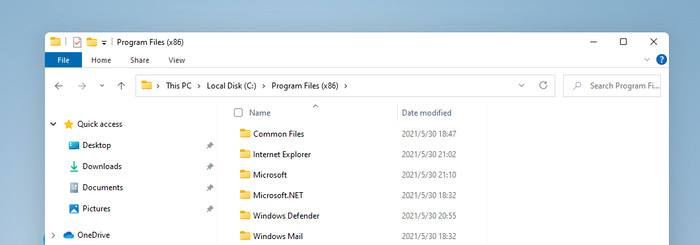
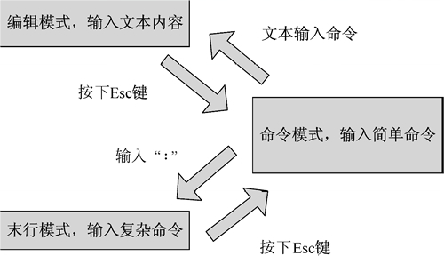

Linux：容器环境与 SSH
基于Docker desktop学习
开启容器 : C:\Users\17hwliao>docker start linux-lab
进入容器 : C:\Users\17hwliao>docker exec -it linux-lab /bin/bash
使用SSH远程连接
SSH是一种网络协议，用于计算机之间的加密登录。如果一个用户从本地计算机，使用SSH协议登录另一台远程计算机，我们就可以认为，这种登录是安全的，即使被中途截获，密码也不会泄露。最早的时候，互联网通信都是明文通信，一旦被截获，内容就暴露无疑。1995年，芬兰学者Tatu Ylonen设计了SSH协议，将登录信息全部加密，成为互联网安全的一个基本解决方案，迅速在全世界获得推广，目前已经成为Linux系统的标准配置。
云服务器上安装的Ubuntu默认都是自带了OpenSSH服务端的，我们可以直接连接，如果你的Ubuntu服务器上没有安装OpenSSH服务器端，那么可以输入命令进行安装：
删除旧容器 : docker rm 旧容器 ;
创建一个端口映射的容器 : docker run -d --name linux-lab -p 2222:22 ubuntu sleep infinity
检查端口映射的条件 : docker port linux-lab
进入容器 : docker exec -it linux-lab /bin/bash
apt update
apt install -y openssh-server
passwd root
# 输入密码：ok
# 配置 SSH
sed -i 's/#PermitRootLogin prohibit-password/PermitRootLogin yes/' /etc/ssh/sshd_config
# 启动 SSH
service ssh start
# 退出容器
exit
# 1. 在 Windows PowerShell 中，连接到容器
ssh root@localhost -p 2222 //-p命令不可以省略;
# 密码: ok
# 2. 在容器内，测试连接宿主机
ssh 17hwliao@host.docker.internal
# 3. 如果 ping 通，尝试 SSH 连接
# 假设你的 Windows 用户名是 17hwliao
ssh 17hwliao@host.docker.internal
# 输入 Windows 密码
连接宿主机 : ssh 17hwliao@host.docker.internal //开发中不需要实现,就不实现了
连接容器 : ssh root@localhost -p 2222
docker exec -it linux-lab /bin/bash
service ssh start //启动容器的ssh服务 ;
service ssh status // 查看状态
退出 重新连接;
映射端口后, 直接使用XShell 访问本机的目标端口即可实现访问到目标容器 ;
不使用端口映射 : 无法使用ssh从宿主机连接到容器 , 只提供虚拟网卡 ;
在 Xshell 中正确连接
- 打开 Xshell
- 新建会话
- 主机名：
localhost - 端口：
2222 - 连接
- 用户名：
root - 密码：
ok
文件系统介绍
ls / : 获取根目录 ;
ll / : //查看详细信息 ;
我们可以看到根目录下有很多个文件夹，它们都有着各自的划分：
- /bin 可执行二进制文件的目录，如常用的命令 ls、tar、mv、cat 等实际上都是一些小的应用程序
- /home 普通用户的主目录，对应Windows下的C:/Users/用户名/
- /root root用户的主目录（root用户是具有最高权限的用户，之后会讲）
- /boot 内核文件的引导目录, 放置 linux 系统启动时用到的一些文件
- /sbing 超级用户使用的指令文件
- /tmp 临时文件目录，一般用户或正在执行的程序临时存放文件的目录，任何人都可以访问，重要数据不可放置在此目录下。
- /dev 设备文件目录，在Linux中万物皆文件，实际上你插入的U盘等设备都会在dev目录下生成一个文件，我们可以很方便地通过文件IO方式去操作外设，对嵌入式开发极为友好。
- /lib 共享库，系统使用的函数库的目录，程序在执行过程中，需要调用一些额外的参数时需要函数库的协助。
- /usr 第三方 程序目录
- /etc 配置程序目录，系统配置文件存放的目录
- /var 可变文件，放置系统执行过程中经常变化的文件
- /opt 用户使用目录，给主机额外安装软件所摆放的目录。
我们可以直接输入命令来查看目录下的所有文件：
#只显示文件名称，且不显示隐藏文件
ls
#显示隐藏文件以及文件详细信息
ll
ls -al : 查看全部文件 ,包含 .开头的隐藏文件 ;
上传和删除文件 :
使用Xtfp-8和Xshell配套使用 :
pwd 显示当前工作的目标目录 ;
ls : 目录下具体文件 ;
使用图形化界面可以直接实现文件的转移和删除 ;
删除文件 : rm 文件名 中间空格需要使用反斜杠实现 ;
用户和用户组
Linux系统是一个多用户多任务的分时操作系统，任何一个要使用系统的用户，都必须申请一个账号，然后以这个账号的身份进入系统。比如我们之前就是使用我们在创建服务器时申请的初始用户test，通过输入用户名和密码登录到系统中，之后才能使用各种命令进行操作。其实用户机制和我们的Windows比较类似。一般的普通用户只能做一些比较基本的操作，并且只能在自己的目录（如/home/test）中进行文件的创建和删除操作。
我们可以看到，当前状态信息分为三段：
test@ubuntu-server:~$
cd - 用于切换到上一次所在的目录
cd .. 用于切换到当前目录的上一级目录
cd~ 用于回到工作所用的目录 ;
pwd 显示当前所在的完整路径。
格式为：用户名@服务器名称:当前所处的目录$，其中~代表用户目录，如果不是用户目录，会显示当前的绝对路径地址。我们也可以使用pwd命令来直接查看当前所处的目录。
在Linux中默认存在一个超级用户root，而此用户拥有最高执行权限，它能够修改任何的内容，甚至可以删除整个Linux内核，正常情况下不会使用root用户进行登陆，只有在特殊情况下才会使用root用户来进行一些操作，root用户非常危险，哪怕一个小小的命令都能够毁掉整个Linux系统，比如rm -rf /*，感兴趣的话我们可以放在最后来演示（在以前老是听说安卓手机root，实际上就是获取安卓系统底层Linux系统的root权限，以实现修改系统文件的目的）
我们可以使用sudo -s并输入当前用户的密码切换到root用户，可以看到出现了一些变化：
docker 容器为缩减体积 , 抹去了sudo的存在 , 默认用户就是root
后续操作可以直接免去sudo ;
test@ubuntu-server:~$
root@ubuntu-server:/home/test#
们发现$符号变成了#符号，注意此符号表示当前的用户权限等级，并且test也变为了root，在此用户下，我们可以随意修改test用户文件夹以外的内容，而test用户下则无法修改。如果需要退出root用户，直接输入exit即可。
接着我们来看一下，如何进行用户的管理操作，进行用户管理，包括添加用户和删除用户都需要root权限才可以执行，但是现在我们是test用户，我们可以在命令前面添加sudo来暂时以管理员身份执行此命令，比如说我们现在想要添加一个新的用户：
sudo useradd study
id 用户名 ; 查看用户是否创建成功;
其中study就是我们想要创建的新用户，useradd命令就是创建新用户的命令，同样的，删除用户：
sudo userdel study
Linux中的命令一般都可以携带一些参数来以更多特地的方式执行，我们可以在创建用户时，添加一些额外的参数来进行更多高级操作：
- -d<登录目录> 指定用户登录时的起始目录。
- -g<群组> 指定用户所属的群组。
- -G<群组> 指定用户所属的附加群组。
- -m 自动建立用户的登入目录。
- -M 不要自动建立用户的登入目录。
- -s 指定Shell，一般指定为/bin/bash
如果还想查看更多命令，可以直接使用man来查看命令的详细参数列表，比如：
shell****复制代码
man useradd
比如我们现在需要在用户创建时顺便创建用户的文件夹，并指定shell（任意一种命令解释程序，用于处理我们输入的命令）为bash：
shell****复制代码
sudo useradd study -m -s /bin/bash
-m = create home directory（创建家目录）
可以看到已经自动在home目录下创建了study文件夹（这里..表示上一级目录，.表示当前目录）：
home存放的是用户的家目录 ;
shell****复制代码
test@ubuntu-server:~$ ls ..
study test
用户创建完成之后，我们可以为此用户设定密码（如果不指定用户，那么会设置当前用户的密码）：
shell****复制代码
sudo passwd study
输入密码之后，我们可以使用命令来切换用户：
shell****复制代码
test@ubuntu-server:~$ su - study
Password:
study@ubuntu-server:~$
可以看到，切换用户后名称已经修改为study了，我们使用exit即可退出当前用户回到test。
输入who可以查看当前登录账号（注意是登录的账号）输入whoami可以查看当前的操作账号：
shell****复制代码
test@ubuntu-server:~$ su study
Password:
study@ubuntu-server:/home/test$ cd ~
study@ubuntu-server:~$ who
test pts/0 2022-01-24 03:57 (192.168.10.3)
study@ubuntu-server:~$ whoami
study
study@ubuntu-server:~$
接着我们来看用户组，每个用户都有一个用户组，系统可以对一个用户组中的所有用户进行集中管理。我们可以输入groups来查看当前用户所有的用户组：
sh****复制代码
test@ubuntu-server:~$ groups
test adm cdrom sudo dip plugdev lxd
我们可以输入id来查看用户所属的用户相关信息：
sh****复制代码
test@ubuntu-server:~$ id
uid=1000(test) gid=1000(test) groups=1000(test),4(adm),24(cdrom),27(sudo),30(dip),46(plugdev),116(lxd)
我们可以看到test用户默认情况下主要用户组为同名的test用户组，并且还属于一些其他的用户组，其中sudo用户组就表示可以执行sudo命令，我们发现我们创建的study用户没有sudo的执行权限：
sh****复制代码
study@ubuntu-server:~$ sudo -s
[sudo] password for study:
study is not in the sudoers file. This incident will be reported.
正是因为没有加入到sudo用户组，这里我们来尝试将其添加到sudo用户组：
sh****复制代码
test@ubuntu-server:~$ id study
uid=1001(study) gid=1001(study) groups=1001(study)
使用usermod命令来对用户的相关设置进行修改，参数与useradd大致相同：
sh****复制代码
test@ubuntu-server:~$ sudo usermod study -G sudo
test@ubuntu-server:~$ id study
uid=1001(study) gid=1001(study) groups=1001(study),27(sudo)
接着切换到study用户就可以使用sudo命令了：
sh****复制代码
To run a command as administrator (user "root"), use "sudo <command>".
See "man sudo_root" for details.
study@ubuntu-server:/home/test$ sudo -s
[sudo] password for study:
root@ubuntu-server:/home/test#
实际上，我们的用户信息是存储在配置文件中的，我们之前说了，配置文件一般都放在etc目录下，而用户和用户组相关的配置文件，存放在/etc/passwd和/etc/group中，我们可以使用cat命令将文件内容打印到控制台：
bash****复制代码
test@ubuntu-server:~$ cat /etc/passwd
root:x:0:0:root:/root:/bin/bash
daemon:x:1:1:daemon:/usr/sbin:/usr/sbin/nologin
bin:x:2:2:bin:/bin:/usr/sbin/nologin
sys:x:3:3:sys:/dev:/usr/sbin/nologin
sync:x:4:65534:sync:/bin:/bin/sync
格式为：注册名:口令:用户标识号:组标识号:用户名:用户主目录:命令解释程序 ，而我们的密码则存放在/etc/shadow中，是以加密形式存储的，并且需要root权限才能查看。
常用命令
文件操作
文件是最基本的内容，我们可以使用ls命令列出当前目录中所有的文件，参数-a表示包含所有的隐藏文件，-l表示列出详细信息：
sh****复制代码
test@ubuntu-server:~$ ls -al
total 44
drwxr-xr-x 4 test test 4096 Jan 24 08:55 .
drwxr-xr-x 4 root root 4096 Jan 24 04:24 ..
-rw------- 1 test test 2124 Jan 24 04:29 .bash_history
-rw-r--r-- 1 test test 220 Feb 25 2020 .bash_logout
-rw-r--r-- 1 test test 3771 Feb 25 2020 .bashrc
drwx------ 2 test test 4096 Jan 21 15:48 .cache
drwx------ 3 test test 4096 Jan 23 14:49 .config
-rw-r--r-- 1 test test 807 Feb 25 2020 .profile
-rw------- 1 test test 34 Jan 24 04:17 .python_history
-rw-r--r-- 1 test test 0 Jan 21 15:52 .sudo_as_admin_successful
-rw------- 1 test test 7201 Jan 24 08:55 .viminfo
可以看到当前目录下的整个文件列表，那么这些信息各种代表什么意思呢，尤其是最前面那一栏类似于drwxr-xr-x的字符串。
它表示文件的属性，其中第1个字符表示此文件的类型：
-表示普通文件
l为链接文件
d表示目录（文件夹）
c表示字符设备
b表示块设备
p有名管道
f堆栈文件
s套接字等，这些一般都是用于进程之间通信使用的。
第2-4个字符表示文件的拥有者（User）对该文件的权限
第5-7个字符表示文件所属用户组（Group）内用户对该文件的权限
最后8-10个字符表示其他用户（Other）对该文件的权限。其中r为读权限、w为写权限、x( execute )为执行权限，为了方便记忆，直接记UGO就行了。
比如drwxr-xr-x就表示这是一个目录，文件的拥有者可以在目录中读、写和执行，而同一用户组的其他用户只能读和执行，其他用户也是一样。
第二栏数据可以看到是一列数字，它表示文件创建的链接文件（快捷方式）数量，一般只有1表示只有当前文件 , >= 2 存在链接文件 ，我们也可以尝试创建一个链接文件：
sh****复制代码
test@ubuntu-server:~$ ln .bash_logout kk
创建后，会生成一个名为kk的文件
我们对此文件的操作相当于直接操作.bash_logout
跟Windows中的快捷方式比较类似，了解一下即可。
再次执行ll命令，可以看到.bash_logout的链接数变成了2。
第三栏数据为该文件或是目录的拥有者。
第四栏数据表示所属的组。
第五栏数据表示文件大小，以字节为单位。
第六栏数据为文件的最后一次修改时间
最后一栏就是文件名称了，就不多说了，再次提及..表示上级目录，.表示当前目录，最前面有一个.开头的文件为隐藏文件。可以看到上级目录（也就是/home目录）所有者为root，并且非root用户无法进行写操作，只能执行读操作，而当前目录以及目录下所有文件则属于test用户，test用户可以随意进行修改。
在了解了Linux的文件查看之后再去看Windows的文件管理，会觉得Windows的太拉了：

那么，如果我们希望对文件的属性进行修改，比如我们现在希望将某个文件的写权限给关闭，可以使用chmod命令来进行文件属性修改，我们先创建一个test文件，使用touch命令来创建文件，使用mkdir命令来创建目录：
shell****复制代码
test@ubuntu-server:~$ touch test
test@ubuntu-server:~$ ll test
-rw-rw-r-- 1 test test 0 Jan 24 09:32 test
可以看到文件创建之后的默认权限为可读可写，接着我们来将其修改为只读，chmod的使用方法如下：
- chmod (u/g/o/a)(+/-)(r/w/x) 文件名称
- chmod a-x-w-r xxx 可以实现对对应文件连续的加减,实现修改权限
我们可以从ugo中选择或是直接a表示所有，+和-表示添加和删除权限，最后rwx不用我说了吧
sh****复制代码
test@ubuntu-server:~$ chmod a-w test
test@ubuntu-server:~$ ll test
-r--r--r-- 1 test test 0 Jan 24 09:32 test
除了这种方式之外，我们也可以使用数字来代替，比如现在我要给前两个添加读权限，那么：
约定：r=4，w=2，x=1，需要什么权限就让对应权限的数字相加，一个数字表示一个rwx的权限状态，比如我们想修改为-rw-rw-r--，那么对应的数字就是664，对应的命令为： 每个数字代表的是对应位置的组的权限状态 ;
sh****复制代码
test@ubuntu-server:~$ chmod 664 test
test@ubuntu-server:~$ ll test
-rw-rw-r-- 1 test test 0 Jan 24 09:32 test
如果我们想修改文件的拥有者或是所属组，可以使用chown和chgrp命令：
sh****复制代码
test@ubuntu-server:~$ sudo chown root test
test@ubuntu-server:~$ ls -l
total 0
-rw-rw-r-- 1 root test 0 Jan 24 10:43 test
test@ubuntu-server:~$ sudo chgrp root test
test@ubuntu-server:~$ ls -l
total 0
-rw-rw-r-- 1 root root 0 Jan 24 10:43 test
再次操作该文件，会发现没权限：
这种操作文件的方式比window人机操作舒服多了
sh****复制代码
test@ubuntu-server:~$ chmod 777 test
chmod: changing permissions of 'test': Operation not permitted
接着我们来看文件的复制、移动和删除，这里我们先创建一个新的目录并进入到此目录用于操作：
sh****复制代码
test@ubuntu-server:~$ mkdir study
test@ubuntu-server:~$ cd study
test@ubuntu-server:~/study$
首先我们演示文件的复制操作，文件的复制使用cp命令，比如现在我们想把上一级目录中的test文件复制到当前目录中：
注意 : 全部的复制后的操作都是复制到当前目录下
sh****复制代码
test@ubuntu-server:~/study$ cp ../test 新的命名文件 ;
test@ubuntu-server:~/study$ ls
test
那么如果我们想要将一整个目录进行复制呢？我们需要添加一个-r参数表示将目录中的文件递归复制：
只能实现目录复制目录到当前的路径下 ;
sh****复制代码
test@ubuntu-server:~/study$ cd ~
test@ubuntu-server:~$ cp -r study study_copied
test@ubuntu-server:~$ ls -l
total 8
drwxrwxr-x 2 test test 4096 Jan 24 10:16 study
drwxrwxr-x 2 test test 4096 Jan 24 10:20 study_copied
-rw-rw-r-- 1 test test 0 Jan 24 09:32 test
可以看到我们的整个目录中所有的文件也一起被复制了。
接着我们来看看移动操作，相当于是直接将一个文件转移到另一个目录中了，我们再创建一个目录用于文件的移动，并将test文件移动到此目录中，我们使用mv命令进行文件的移动：
可以加上 -r 实现复制文件的效果;
是实现前面的文件转移到后面的文件夹中去的操作 ;
sh****复制代码
test@ubuntu-server:~$ mkdir study2
test@ubuntu-server:~$ mv test study2
test@ubuntu-server:~$ ls
study study2 study_copied
test@ubuntu-server:~$ cd study2
test@ubuntu-server:~/study2$ ls
test
现在我们想要移动个目录到另一个目录中，比如我们想将study目录移动到study2目录中：
sh****复制代码
test@ubuntu-server:~$ mv study study2
test@ubuntu-server:~$ ls
study2 study_copied
test@ubuntu-server:~$ cd study2
test@ubuntu-server:~/study2$ ls
study test
mv命令不仅能实现文件的移动，还可以实现对文件重命名操作，比如我们想将文件test重命名为yyds，那么直接将其进行移动操作即可：
mv study2 ../ 实现移动到上一级目录中去 ;
mv 源文件夹 目标路径/在这里可以实现重命名 ;
sh****复制代码
test@ubuntu-server:~/study2$ ls
study test
test@ubuntu-server:~/study2$ mv test yyds
test@ubuntu-server:~/study2$ ls
study yyds
最后就是删除命令了，使用rm进行删除操作，比如现在我们想删除study2目录（注意需要添加-r参数表示递归删除文件夹中的内容）：
rm -r 文件夹名 实现递归删除 ;
sh****复制代码
test@ubuntu-server:~$ rm -r study2
test@ubuntu-server:~$ ls
study_copied
而最常提到的rm -rf /*正是删除根目录下所有的文件（非常危险的操作），-f表示忽略不存在的文件，不进行任何提示，*是一个通配符，表示任意文件。这里我们演示一下删除所有.txt结尾的文件：
sh****复制代码
test@ubuntu-server:~$ touch 1.txt 2.txt 3.txt
test@ubuntu-server:~$ ls
1.txt 2.txt 3.txt
test@ubuntu-server:~$ rm *.txt
test@ubuntu-server:~$ ls
test@ubuntu-server:~$
最后我们再来看文件的搜索，我们使用find命令来进行搜索，比如我想搜索/etc目录下名为passwd的文件：
检索操作 ;
首字母检索 find 目标路径下 -name 检索文件字母* ;
直接检索文件find /root -type f 检索路径下的全部文件 ; （包括隐藏文件）
find /路径 -n 按名字检索; -type实现按类型检索;
复制代码
test@ubuntu-server:~$ sudo find /etc -name passwd
[sudo] password for test:
/etc/pam.d/passwd
/etc/passwd
它还支持通配符，比如搜索以s开头的文件：
复制代码
test@ubuntu-server:~$ sudo find /etc -name s*
/etc/subuid
/etc/screenrc
/etc/sensors3.conf
/etc/sysctl.conf
/etc/sudoers
/etc/shadow
/etc/skel
/etc/pam.d/su
/etc/pam.d/sshd
/etc/pam.d/sudo
...
系统管理
接着我们来查看一些系统管理相关的命令，比如我们Windows中的任务管理器，我们可以使用top命令来打开：
复制代码
top - 10:48:46 up 5:52, 1 user, load average: 0.00, 0.00, 0.00
Tasks: 191 total, 2 running, 189 sleeping, 0 stopped, 0 zombie
%Cpu(s): 0.0 us, 0.2 sy, 0.0 ni, 99.8 id, 0.0 wa, 0.0 hi, 0.0 si, 0.0 st
MiB Mem : 3919.1 total, 2704.2 free, 215.0 used, 999.9 buff/cache
MiB Swap: 3923.0 total, 3923.0 free, 0.0 used. 3521.4 avail Mem
PID USER PR NI VIRT RES SHR S %CPU %MEM TIME+ COMMAND
10528 test 20 0 8944 3072 2652 R 0.7 0.1 0:00.07 top
9847 root 20 0 0 0 0 I 0.3 0.0 0:00.87 kworker/0:0-events
1 root 20 0 102760 10456 7120 S 0.0 0.3 0:02.02 systemd
2 root 20 0 0 0 0 S 0.0 0.0 0:00.01 kthreadd
3 root 0 -20 0 0 0 I 0.0 0.0 0:00.00 rcu_gp
4 root 0 -20 0 0 0 I 0.0 0.0 0:00.00 rcu_par_gp
6 root 0 -20 0 0 0 I 0.0 0.0 0:00.00 kworker/0:0H-kblockd
8 root 0 -20 0 0 0 I 0.0 0.0 0:00.00 mm_percpu_wq
9 root 20 0 0 0 0 S 0.0 0.0 0:00.15 ksoftirqd/0
10 root 20 0 0 0 0 R 0.0 0.0 0:01.49 rcu_sched
11 root rt 0 0 0 0 S 0.0 0.0 0:00.24 migration/0
12 root -51 0 0 0 0 S 0.0 0.0 0:00.00 idle_inject/0
14 root 20 0 0 0 0 S 0.0 0.0 0:00.00 cpuhp/0
15 root 20 0 0 0 0 S 0.0 0.0 0:00.00 cpuhp/1
16 root -51 0 0 0 0 S 0.0 0.0 0:00.00 idle_inject/1
17 root rt 0 0 0 0 S 0.0 0.0 0:00.30 migration/1
18 root 20 0 0 0 0 S 0.0 0.0 0:00.07 ksoftirqd/1
20 root 0 -20 0 0 0 I 0.0 0.0 0:00.00 kworker/1:0H-kblockd
可以很清楚地看到当前CPU的使用情况以及内存的占用情况。
按下数字键1，可以展示所有CPU核心的使用情况
按下f 进入设置界面, 按到按<space> or <D键>实现可视化项的增加和减少 ;
复制代码
%Cpu0 : 0.0 us, 0.0 sy, 0.0 ni,100.0 id, 0.0 wa, 0.0 hi, 0.0 si, 0.0 st
%Cpu1 : 0.0 us, 0.0 sy, 0.0 ni,100.0 id, 0.0 wa, 0.0 hi, 0.0 si, 0.0 st
复制代码
Fields Management for window 1:Def, whose current sort field is %MEM
Navigate with Up/Dn, Right selects for move then <Enter> or Left commits,
'd' or <Space> toggles display, 's' sets sort. Use 'q' or <Esc> to end!
按下q键即可退出监控界面。
我们可以直接输入free命令来查看当前系统的内存使用情况：
复制代码
test@ubuntu-server:~$ free -m
total used free shared buff/cache available
Mem: 3919 212 2706 1 999 3523
Swap: 3922 0 3922
其中-m表示以M为单位，也可以-g表示以G为单位，默认是kb为单位。
最后就是磁盘容量，我们可以使用lsblk来查看所有块设备的信息，其中就包括我们的硬盘、光驱等：
复制代码
test@ubuntu-server:~$ lsblk
NAME MAJ:MIN RM SIZE RO TYPE MOUNTPOINT
loop0 7:0 0 48.9M 1 loop /snap/core18/2127
loop1 7:1 0 28.1M 1 loop /snap/snapd/12707
loop2 7:2 0 62M 1 loop /snap/lxd/21032
sr0 11:0 1 1024M 0 rom
nvme0n1 259:0 0 20G 0 disk
├─nvme0n1p1 259:1 0 512M 0 part /boot/efi
├─nvme0n1p2 259:2 0 1G 0 part /boot
└─nvme0n1p3 259:3 0 18.5G 0 part
└─ubuntu--vg-ubuntu--lv 253:0 0 18.5G 0 lvm /
可以看到nvme开头的就是我们的硬盘（这个因人而异，可能你们的是sda，磁盘类型不同名称就不同）可以看到nvme0n1 容量为20G，并且512M用作存放EFI文件，1G存放启动文件，剩余容量就是存放系统文件和我们的用户目录。
这里要提到一个挂载的概念：
挂载，指的就是将设备文件中的顶级目录连接到 Linux 根目录下的某一目录（最好是空目录），访问此目录就等同于访问设备文件。
比如我们的主硬盘，挂载点就被设定为/根目录，而我们所有保存的文件都会存储在硬盘中，如果你有U盘（最好将U盘的文件格式改为ExFat，可以直接在Windows中进行格式化，然后随便放入一些文件即可）之类的东西，我们可以演示一下对U盘进行挂载：
sh****复制代码
test@ubuntu-server:~$ sudo fdisk -l
...
Disk /dev/sda: 60 GiB, 64424509440 bytes, 125829120 sectors
Disk model: USB DISK
Units: sectors of 1 * 512 = 512 bytes
Sector size (logical/physical): 512 bytes / 512 bytes
I/O size (minimum/optimal): 512 bytes / 512 bytes
Disklabel type: dos
Disk identifier: 0x4a416279
Device Boot Start End Sectors Size Id Type
/dev/sda1 * 614400 125214719 124600320 59.4G 7 HPFS/NTFS/exFAT
/dev/sda2 125214720 125825022 610303 298M 6 FAT16
将U盘插入电脑，选择连接到Linux，输入sudo fdisk -l命令来查看硬盘实体情况，可以看到有一个USB DISK设备，注意观察一下是不是和自己的U盘容量一致，可以看到设备名称为/dev/sda1。
接着我们设备挂载到一个目录下：
sh****复制代码
test@ubuntu-server:~$ mkdir u-test
test@ubuntu-server:~$ sudo mount /dev/sda1 u-test/
test@ubuntu-server:~$ cd u-test/
test@ubuntu-server:~/u-test$ ls
CGI
cn_windows_10_enterprise_ltsc_2019_x64_dvd_9c09ff24.iso
cn_windows_7_professional_x64_dvd_x15-65791.iso
cn_windows_8.1_enterprise_with_update_x64_dvd_6050374.iso
cn_windows_8.1_professional_vl_with_update_x64_dvd_4050293.iso
cn_windows_server_2019_updated_july_2020_x64_dvd_2c9b67da.iso
'System Volume Information'
zh-cn_windows_10_consumer_editions_version_21h1_updated_sep_2021_x64_dvd_991b822f.iso
zh-cn_windows_11_consumer_editions_x64_dvd_904f13e4.iso
最后进入到此目录中，就能看到你U盘中的文件了，如果你不想使用U盘了，可以直接取消挂载：
复制代码
test@ubuntu-server:~/u-test$ cd ..
test@ubuntu-server:~$ sudo umount /dev/sda1
最后我们可以通过df命令查看当前磁盘使用情况：
复制代码
test@ubuntu-server:~$ df -m
Filesystem 1M-blocks Used Available Use% Mounted on
udev 1900 0 1900 0% /dev
tmpfs 392 2 391 1% /run
/dev/mapper/ubuntu--vg-ubuntu--lv 18515 6544 11009 38% /
tmpfs 1960 0 1960 0% /dev/shm
tmpfs 5 0 5 0% /run/lock
tmpfs 1960 0 1960 0% /sys/fs/cgroup
/dev/nvme0n1p2 976 109 800 12% /boot
/dev/nvme0n1p1 511 4 508 1% /boot/efi
/dev/loop0 49 49 0 100% /snap/core18/2127
/dev/loop1 29 29 0 100% /snap/snapd/12707
/dev/loop2 62 62 0 100% /snap/lxd/21032
tmpfs 392 0 392 0% /run/user/1000
输入ps可以查看当前运行的一些进程，其实和top有点类似，但是没有监控功能，只能显示当前的。
复制代码
test@ubuntu-server:~$ ps
PID TTY TIME CMD
11438 pts/0 00:00:00 bash
11453 pts/0 00:00:00 ps
添加-ef查看所有的进程：
复制代码
test@ubuntu-server:~$ ps -ef
UID PID PPID C STIME TTY TIME CMD
root 1 0 0 04:55 ? 00:00:02 /sbin/init
root 2 0 0 04:55 ? 00:00:00 [kthreadd]
root 3 2 0 04:55 ? 00:00:00 [rcu_gp]
root 4 2 0 04:55 ? 00:00:00 [rcu_par_gp]
root 6 2 0 04:55 ? 00:00:00 [kworker/0:0H-kblockd]
...
我们可以找到对应的进程ID（PID），使用kill命令将其强制终止：
复制代码
test@ubuntu-server:~$ ps
PID TTY TIME CMD
11438 pts/0 00:00:00 bash
11455 pts/0 00:00:00 ps
test@ubuntu-server:~$ kill -9 11438
Connection to 192.168.10.6 closed.
比如我们可以将当前会话的bash给杀死，那么会导致我们的连接直接断开，其中-9是一个信号，表示杀死进程：
- 1 (HUP)：重新加载进程。
- 9 (KILL)：杀死一个进程。
- 15 (TERM)：正常停止一个进程。
最后如果我们想要正常关机，只需要输入shutdown即可，系统会创建一个关机计划，并在指定时间关机，或是添加now表示立即关机：
复制代码
test@ubuntu-server:~$ sudo shutdown
[sudo] password for test:
Shutdown scheduled for Mon 2022-01-24 11:46:18 UTC, use 'shutdown -c' to cancel.
test@ubuntu-server:~$ sudo shutdown now
Connection to 192.168.10.6 closed by remote host.
Connection to 192.168.10.6 closed.
压缩解压
比较常用的压缩和解压也是重点，我们在Windows中经常需要下载一些压缩包，并且将压缩包解压才能获得里面的文件，而Linux中也支持文件的压缩和解压。
这里我们使用tar命令来完成文件亚索和解压操作，在Linux中比较常用的是gzip格式，后缀名一般为.gz，tar命令的参数-c表示对文件进行压缩，创建新的压缩文件，-x表示进行解压操作，-z表示以gzip格式进行操作，-v可以在处理过程中输出一些日志信息，-f表示对普通文件进行操作，这里我们创建三个文件并对这三个文件进行打包：
sh****复制代码
test@ubuntu-server:~$ tar -zcvf test.tar.gz)打包后的文件夹 *.txt
1.txt
2.txt
3.txt
test@ubuntu-server:~$ ls
1.txt 2.txt 3.txt test.tar.gz
test@ubuntu-server:~$
接着我们删除刚刚三个文件，再执行解压操作，得到压缩包中文件：
sh****复制代码
test@ubuntu-server:~$ rm *.txt
test@ubuntu-server:~$ ls
test.tar.gz
test@ubuntu-server:~$ tar -zxvf test.tar.gz
1.txt
2.txt
3.txt
test@ubuntu-server:~$ ls
1.txt 2.txt 3.txt test.tar.gz
同样的，我们也可以对一个文件夹进行打包：
sh****复制代码
test@ubuntu-server:~$ mv *.txt test
test@ubuntu-server:~$ tar -zcvf test.tar.gz test/
test/
test/1.txt
test/2.txt
test/3.txt
test@ubuntu-server:~$ rm -r test
test@ubuntu-server:~$ ls
test.tar.gz
test@ubuntu-server:~$ tar -zxvf test.tar.gz
test/
test/1.txt
test/2.txt
test/3.txt
test@ubuntu-server:~$ ls
test test.tar.gz
test@ubuntu-server:~$ ls test
1.txt 2.txt 3.txt
到此，Linux的一些基本命令就讲解为止。
vim文本编辑器
和Windows中的记事本一样，Linux中也有文本编辑器，叫做Vi编辑器，Ubuntu中内置了Vi编辑器的升级版Vim，我们这里就讲解Vim编辑器的使用。
我们可以直接输入vim 文件名称来使用Vim编辑器对文本文件进行编辑：
sh****复制代码
test@ubuntu-server:~$ vim hello.txt
进入编辑器之后，我们发现界面变成了：
复制代码
~
~
~
~
~
~
~
~
~
~
~
~
"hello.txt" [New File] 0,0-1 All
这时我们直接输入内容是无法完成的，因为默认进入之后为命令模式，Vim编辑器默认有三种模式：

- 命令模式：此模式下可以输入任意的命令进行操作，所有的输入都被看做是命令输入，而不是文本编辑输入。
- 编辑模式：此模式下输入的任何内容都会以文本编辑方式写入到文件中，就像我们直接在Windows的记事本中写内容一样。
- 末行模式：此模式下用于输入一些复杂命令，会在最后一行进行复杂命令的输入。
在命令模式下，我们可以直接按下键盘上的i，此命令表示进行插入操作，会自动切换到编辑模式，这时可以看到最下方变为：
复制代码
~
~
~
~
~
~
~
-- INSERT -- 1,1 All
而这时我们所有的输入内容都可以直接写到文件中了，如果我们想回到命令模式，按下Esc键即可。
除了i以外，我们也可以
按下a表示从当前光标所在位置之后继续写，与i不同的是，i会在光标之前继续写，
o会直接跳到下一行，而
A表示在当前行的最后继续写入( 在命令形势下输入 )，
I表示在当前行的最前面继续写入。
这里我们随便粘贴一段文本信息进去（不要用Ctrl+V，Linux中没这操作，XShell右键点粘贴）：
复制代码
I was hard on people sometimes, probably harder than I needed to be.
I remember the time when Reed was six years old, coming home, and I had just fired somebody that day.
And I imagined what it was like for that person to tell his family and his young son that he had lost his job.
It was hard.
But somebody’s got to do it.
I figured that it was always my job to make sure that the team was excellent, and if I didn’t do it, nobody was going to do it.
You always have to keep pushing to innovate.
Dylan could have sung protest songs forever and probably made a lot of money, but he didn’t.
He had to move on, and when he did, by going electric in 1965, he alienated a lot of people.
在我们编辑完成之后，需要进入到末行模式进行文件的保存并退出，按下:进入末行模式，再输入wq即可保存退出。
接着我们来看一些比较常用的命令，首先是命令模式下的光标移动命令：
- ^ 直接调到本行最前面
- $ 直接跳到本行最后面
- gg 直接跳到第一行
- [N]G 跳转到第N行
- [N]方向键 向一个方向跳转N个字符
在末行模式下，常用的复杂命令有：
- :set number 开启行号
- :w 保存
- :wq或:x 保存并关闭
- :q 关闭
- :q! 强制关闭
我们可以输入/或是?在末行模式中使用搜索功能，比如我们要搜索单词it：
复制代码
/it
接着会在文本中出现高亮，按n跳转到下一个搜索结果，?是从后向前搜索，/是从前向后搜索。
它还支持替换功能，但是使用起来稍微比较复杂，语法如下：
复制代码
:[addr]s/源字符串/目的字符串/[option]
addr表示第几行或是一个范围，option表示操作类型：
- g: globe,表示全局替换
- c: confirm,表示进行确认
- p: 表示替代结果逐行显示(Ctrl + L恢复屏幕)
- i: ignore,不区分大小写
比如我们要将当前行中的it全部替换为he，那么可以这样写：
复制代码
:s/it/he/g
实际上除了以上三种模式外，还有一种模式叫做可视化模式，按下键盘上的v即可进入，它能够支持选取一段文本，选取后，我们可以对指定段落的文本内容快速进行复制、剪切、删除、插入等操作，非常方便。在此模式下，我们可以通过上下左右键进行选取，以进入可视化模式时的位置作为基本位置，通过移动另一端来进行选取。
我们可以使用以下命令来对选中区域进行各种操作：
- y 复制选中区域
- d/x 剪切（删除）选中区域
- p 粘贴
- u 撤销上一步
当然，这些命令在命令模式下也可以使用，但是可视化模式下使用更适合一些。各部分详解
实现使用下载编辑器实现程序 :
- python3 - Python 解释器
作用：指定使用 Python 3 来执行脚本
说明：系统会调用 Python 3 解释器来运行后面的程序
相当于告诉系统："用 Python 3 来运行这个文件"
- ws.py - 脚本文件
作用：要执行的 Python 脚本文件名
说明：ws.py 是程序代码所在的文件
通常 ws 可能代表 "web server"、"websocket" 或 "workspace"
- -o - 选项/参数名
作用：传递给程序的命令行选项
说明：-o 通常表示 "output"（输出）
常见的单字母选项格式：
-o = output
-i = input
-f = file
-d = directory
- ws - 参数值
作用：-o 选项的值
说明：告诉程序输出文件名或路径为 ws
可能表示输出文件名为 ws 或输出到 ws 目
环境安装和项目部署
这个环境配置和实现docker 互相访问连接 , 链接到idea , 实现本地控制 , 后期学完全部的基础项之后回来补把 ;
在学习完了Linux操作系统的一些基本操作之后，我们接着来看如何进行项目的环境安装和部署，包括安装JDK、Nginx服务器，以及上传我们的SpringBoot项目并运行。
我们可以直接使用apt进行软件的安装，它是一个高级的安装包管理工具，我们可以直接寻找对应的软件进行安装，无需再去官网进行下载，非常方便，软件仓库中默认已经帮助我们存放了大量实用软件的安装包，只需要一个安装命令就可以进行安装了。
实际上Ubuntu系统已经为我们自带了一些环境了，比如Python3：
复制代码
test@ubuntu-server:~$ python3
Python 3.8.10 (default, Nov 26 2021, 20:14:08)
[GCC 9.3.0] on linux
Type "help", "copyright", "credits" or "license" for more information.
>>> print("HelloWorld！")
HelloWorld！
>>> exit()
C语言的编译工具GCC可以通过APT进行安装：
apt-get update 先更新一下安装环境 ;
sh****复制代码
sudo apt install gcc
安装后，可以编写一个简单的C语言程序并且编译为可执行文件：
c****复制代码
#include<stdio.h>
int main(){
printf("Hello World!\n");
}
sh****复制代码
test@ubuntu-server:~$ vim hello.c
test@ubuntu-server:~$ gcc hello.c -o hello
test@ubuntu-server:~$ ./hello
Hello World!
而JDK实际上安装也非常简单，通过APT即可：
sh****复制代码
test@ubuntu-server:~$ sudo apt install openjdk-8-j
openjdk-8-jdk openjdk-8-jre openjdk-8-jre-zero
openjdk-8-jdk-headless openjdk-8-jre-headless
test@ubuntu-server:~$ sudo apt install openjdk-8-jdk
接着我们来测试一下编译和运行，首先编写一个Java程序：
复制代码
test@ubuntu-server:~$ vim Main.java
复制代码
public class Main{
public static void main(String[] args){
System.out.println("Hello World！");
}
}
复制代码
test@ubuntu-server:~$ javac Main.java
test@ubuntu-server:~$ ls
Main.class Main.java
test@ubuntu-server:~$ java Main
Hello World！
接着我们来部署一下Redis服务器：
复制代码
test@ubuntu-server:~$ sudo apt install redis
安装完成后，
先启动使用redis , redis-server --daemonize yes
启动后才可以实现redist 连接 ;
可以直接使用redis-cli命令打开Redis客户端连接本地的服务器：
复制代码
test@ubuntu-server:~$ redis-cli
127.0.0.1:6379> keys *
(empty list or set)
使用和之前Windows下没有区别。
接着我们安装一下MySQL服务器，同样的，直接使用apt即可：
复制代码
sudo apt install mysql-server-8.0
我们直接直接登录MySQL服务器，注意要在root权限下使用，这样就不用输入密码了：
service mysql start 在使用内部的mysql 前需要使用命令启动mysql ;
vim mysql.conf.d/mysqld.cnf 外部执行 : 查看配置文件
修改配置后, 需要调用systemctl命令 : 实现系统管理 ;
systemctl restart mysql.service
│ │ │
│ │ └── 服务名称（MySQL服务）
│ └────────── 操作（重启）
└───────────────────── 系统服务管理工具
复制代码
sudo mysql -u root -p
Enter password:
Welcome to the MySQL monitor. Commands end with ; or \g.
Your MySQL connection id is 11
Server version: 8.0.27-0ubuntu0.20.04.1 (Ubuntu)
Copyright (c) 2000, 2021, Oracle and/or its affiliates.
Oracle is a registered trademark of Oracle Corporation and/or its
affiliates. Other names may be trademarks of their respective
owners.
Type 'help;' or '\h' for help. Type '\c' to clear the current input statement.
mysql> exit
可以发现实际上就是我们之前在Windows的CMD中使用的样子，接着我们就创建一个生产环境下使用的数据库：
复制代码
mysql> create database book_manage;
mysql> show databases;
+--------------------+
| Database |
+--------------------+
| book_manage |
| information_schema |
| mysql |
| performance_schema |
| sys |
+--------------------+
5 rows in set (0.01 sec)
接着我们创建一个用户来使用这个数据，一会我们就可以将SpringBoot配置文件进行修改并直接放到此服务器上进行部署。
复制代码
mysql> create user test identified by '123456';
Query OK, 0 rows affected (0.01 sec)
mysql> grant all on book_manage.* to test;
Query OK, 0 rows affected (0.00 sec)
如果觉得这样很麻烦不是可视化的，可以使用Navicat连接进行操作，注意开启一下MySQL的外网访问。
复制代码
test@ubuntu-server:~$ mysql -u test -p
Enter password:
Welcome to the MySQL monitor. Commands end with ; or \g.
Your MySQL connection id is 13
Server version: 8.0.27-0ubuntu0.20.04.1 (Ubuntu)
Copyright (c) 2000, 2021, Oracle and/or its affiliates.
Oracle is a registered trademark of Oracle Corporation and/or its
affiliates. Other names may be trademarks of their respective
owners.
Type 'help;' or '\h' for help. Type '\c' to clear the current input statement.
mysql> show databases;
+--------------------+
| Database |
+--------------------+
| book_manage |
| information_schema |
+--------------------+
2 rows in set (0.01 sec)
使用test用户登录之后，查看数据库列表，有book_manage就OK了。
最后我们修改一下SpringBoot项目的生产环境配置即可：
yaml****复制代码
spring:
mail:
host: smtp.163.com
username: javastudy111@163.com
password: TKPGLAPDSWKGJOWK
datasource:
url: jdbc:mysql://localhost:3306/book_manage
driver-class-name: com.mysql.cj.jdbc.Driver
username: test
password: 123456
jpa:
show-sql: false
hibernate:
ddl-auto: update
springfox:
documentation:
enabled: false
然后启动我们的项目：
sh****复制代码
test@ubuntu-server:~$ java -jar springboot-project-0.0.1-SNAPSHOT.jar
现在我们将前端页面的API访问地址修改为我们的SpringBoot服务器地址，即可正常使用了。
我们也可以将我们的静态资源使用Nginx服务器进行代理：
Nginx("engine x")是一款是由俄罗斯的程序设计师Igor Sysoev所开发高性能的 Web和 反向代理 服务器，也是一个 IMAP/POP3/SMTP 代理服务器。 在高连接并发的情况下，Nginx是Apache服务器不错的替代品。
Nginx非常强大，它能够通提供非常方便的反向代理服务，并且支持负载均衡，不过我们这里用一下反向代理就可以了，实际上就是代理我们的前端页面，然后我们访问Nginx服务器即可访问到静态资源，这样我们前后端都放在了服务器上（你也可以搞两台服务器，一台挂静态资源一台挂SpringBoot服务器，实现真正意义上的分离，有条件的还能上个域名和证书啥的）。
安装如下：
复制代码
test@ubuntu-server:~$ sudo apt install nginx
安装完成后，我们可以直接访问：http://192.168.10.4/，能够出现Nginx页面表示安装成功！
接着我们将静态资源上传到Linux服务器中，然后对Nginx进行反向代理配置：
复制代码
test@ubuntu-server:~$ cd /etc/nginx/
test@ubuntu-server:/etc/nginx$ ls
conf.d koi-utf modules-available proxy_params sites-enabled win-utf
fastcgi.conf koi-win modules-enabled scgi_params snippets
fastcgi_params mime.types nginx.conf sites-available uwsgi_params
test@ubuntu-server:/etc/nginx$ sudo vim nginx.conf
复制代码
server {
listen 80;
server_name 192.168.10.4;
add_header Access-Control-Allow-Origin *;
location / {
root /home/test/static;
charset utf-8;
add_header 'Access-Control-Allow-Origin' '*';
add_header 'Access-Control-Allow-Credentials' 'true';
add_header 'Access-Control-Allow-Methods' '*';
add_header 'Access-Control-Allow-Headers' 'Content-Type,*';
}
}
然后就可以直接访问到我们的前端页面了，这时再开启SpringBoot服务器即可，可以在最后添加&符号表示后台启动。